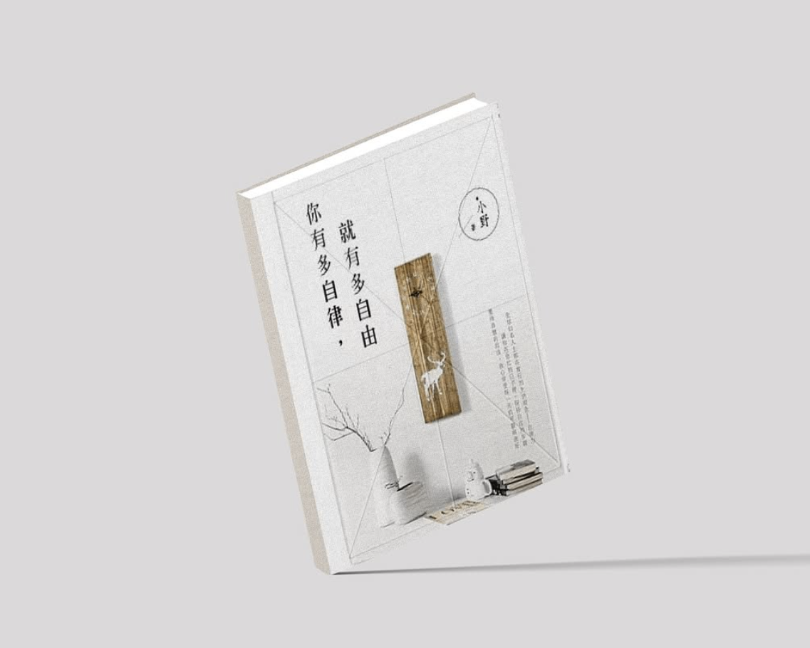

本週選書｜《你有多自律，就有多自由》
自律不是犧牲，而是對未來的投資。

書籍封面
- ✔ 自律不是犧牲，而是對未來的投資
- ✔ 真正的自由，來自於對時間的掌控
- ✔ 每天一點點改變，時間會累積出巨大差距
「自律的人，才真正能享受自由。」
你是否常覺得，雖然每天忙碌，卻好像什麼都沒完成？真正的自律，不在於一次完成所有目標，而在於每天累積的小成就。
這些看似微小的行動，其實像一塊塊磚瓦，慢慢堆出生活的秩序與信心。當你回頭看這些日常，你會發現自己已經走了很長的路。
成就感，是自律最溫柔的回報，也是推動自己繼續前進的力量。
封面人物｜楊謹華
自律絕對會帶來自由、自在、自信。
封面人物｜楊謹華
第1頁：從內心到外在的平衡
她曾在社群上分享：「不管發生什麼事，只要保持善良的心，身邊一定會圍繞著完美的人、事、物。時間會證明自己的選擇是對的，而首先必須自律，這樣才會帶來自由、自在與自信。」
第2頁：自律與時間管理
自律讓每一天都變得有意義。合理安排時間，生活就會更可控。透過規律的作息與努力，可以在繁忙中找到平衡，累積成就感與自我肯定。
「自律不是束縛，而是讓生活更有掌控感。」
封面人物｜蔡依林
「自律對我而言是為了獲得自由。」
封面人物｜蔡依林
1. 才華之外的底氣
蔡依林不是天生的天后，而是靠著長年自律走到今天。從早期被批唱功不足，到後來以高規格舞台美學重塑形象，她的成功不是一夜之間，而是紀律與堅持。
2. 真實作息與自律的力量
她曾在 Podcast 說：「我要求自己早點睡，是為了讓我有更多精力去表演。」自律不是苦行，而是能帶來快樂與成就感，驅使她持續前進。
3. 自律源自目標，而非枷鎖
對她而言，自律是對長期目標的承諾。早睡不是犧牲，而是投資，讓她保持最佳狀態，在舞台上更閃耀。
「我們常稱讚才華，卻忽略了背後的自律。」